Moteur Pas-à-Pas
Introduction
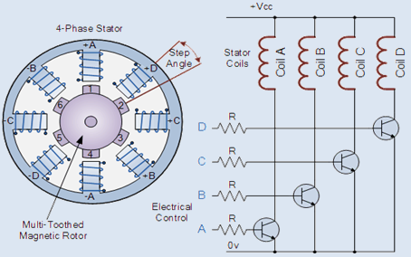 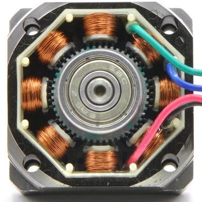
- Un moteur pas à pas est un type de moteur électrique qui se déplace par pas discrets plutôt qu'en rotation continue comme les moteurs classiques. Cette caractéristique permet un contrôle précis de la position, ce qui en fait un choix idéal pour des applications nécessitant une grande précision, telles que les imprimantes 3D, les robots, et les équipements de précision industrielle
- Le Stator est la partie fixe. Il est constitué de 4 bobine A, B, C, D. Ces bobines seront alimentées l'une après l'autre pour faire avancer le moteur pas par pas
- Le rotor est la partie mobile. Il est constitué d'un aimant permanent. Il se déplace en réponse aux champs magnétiques créés par les bobines du stator
- Si on observe la photo, on constate que le rotor est denté ainsi que chaque noyau de bobine. Quand on alimente une bobine, le champs magnétique créé attire les dents du rotor qui s'alignent sur les dents de la bobine alimenté. Les dent de la bobine suivante sont très légèrement décalées par rapport à celles du rotor. Ce décalage correspond au pas du moteur. Quand on alimente la bobine suivante, le rotor se déplace d'un pas pour aligner les dents.
- En résumé, Chaque fois que l'alimentation passe d'une bobine à l'autre, le moteur avance d'un Pas
- Le nombre de pas par révolution d'un moteur dépend du nombre de dents du rotor et du stator. Les
moteurs courants dans le commerce sont:
- Moteur 100 pas: 1 pas = 3.6 °
- Moteur 200 pas: 1 pas = 1.8 °
- Moteur 400 pas: 1 pas = 0.9 °
- On peu faire du microstepping en utilisant des driver adaptés,
Le moteur 28BYJ-48
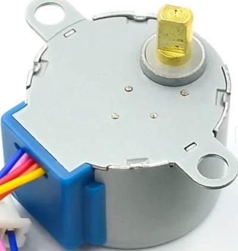 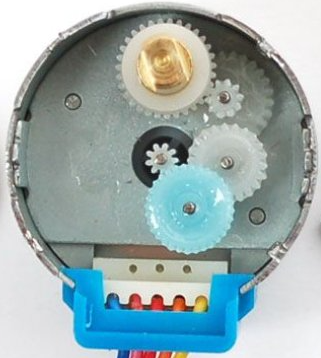
Le 28BYJ-48 est un moteur pas à pas très populaire et économique, souvent utilisé dans les projets Arduino. En voici quelques caractéristiques :
- Moteur unipolaire (5 fils) de 32 pas par révolution. Il existe aussi en version 64 pas,
- Alimentation 5V,
- Grace à un réducteur mécanique de rapport 64, il est équivalent à un moteur de 2048 pas par révolution,
- La durée de l'impulsion pour avancer d'un pas ne doit pas être inférieure à 2ms. Ceci donne une révolution en 2048 × 2ms ≈ 4 secondes. Soit une vitesse max 15 révolution par minute
Le circuit ULN2003
L'ULN2003 est un circuits intégrés de commande de moteur Pas-à-Pas très populaire. Il est composé d'un réseau de 7 commutateurs (transistors Darlington), chacun capable de piloter des charges allant jusqu'à à 500mA et 50V.
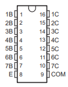 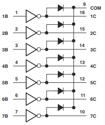 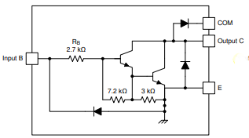
Chaque commutateur permet de controller une bobine du moteur Pas-à-Pas. Pour l'alimentation du moteur, il faut prévoir un Volt de plus à cause de la chute de tension (Vce) dans les commutateur. Les diodes de récupération sont intégrées dans le circuit
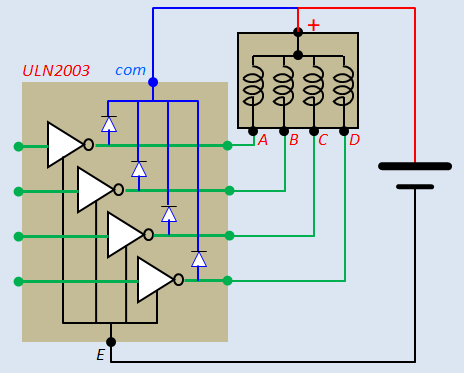Le Module ULN2003
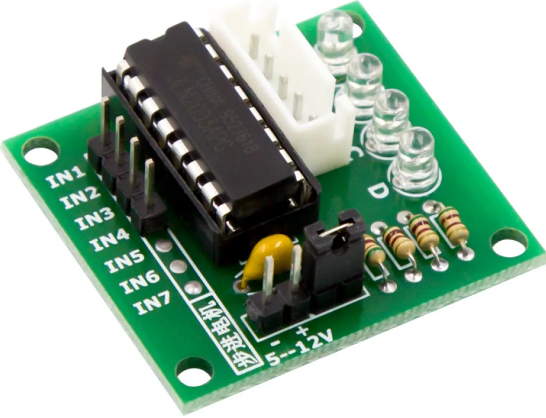 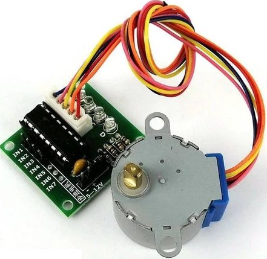
Le module ULN2003 facilite grandement la connectique avec l'Arduino, le moteur et l'alimentation. Il possède:
- Un connecteur 5 pins pour brancher le moteur,
- 2 pins pour brancher l'alimentation du moteur,
- 4 pins IN1 ... IN4 pour controller l'alimentation des bobines à partir de l'Arduino,
- 4 LEDs pour suivre l'état des bobines.
Couple Normal, Couple Fort
- Le mode couple normal consiste à alimenter les bobines l'une apres l'autre
- Le mode couple fort consiste à alimenter les bobines deux par deux. On obtient un couple plus fort mais la consommation de courant est doublée
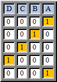 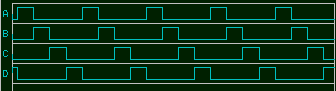
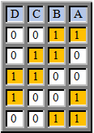 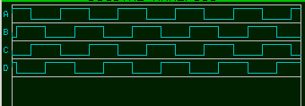
Exemple basique Sans librairie
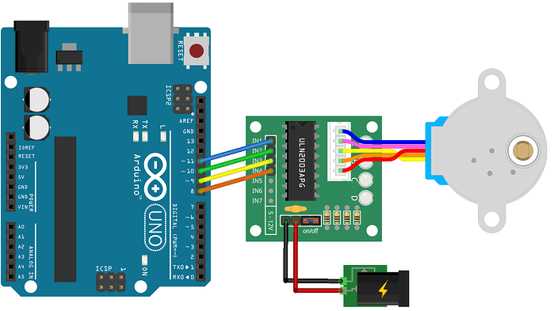Dans cet exemple on va utiliser le moteur pas-à-pas 28BYJ-48. Ce moteur existe en plusieurs versions. Nous utilisons une version 5V, 32 pas, réducteur 1/64, durée min d'un pas : 2 ms
- Alimentation 5V de préférence 6V pour compenser la chute de tension dans l'ULN2003
- 32 pas par révolution. Réducteur mécanique 1/64. On obtient 32*64 = 2048 pas par révolution. Un pas = 360° / 2048 = 0.17°
- On va faire un programme pour faire un tour entier dans un sens puis un tour entier dans l'autre sens pour revenir à la position initiale
- On va avancer d'un pas toutes les 2ms ce qui correspond à un tour en 2048 * 2ms = 4048 ms ≈ 4 secondes. Ne pas oublier que ce moteur a un réducteur mécanique, n'essayez pas de le faire tourner trop vite
- Dans cet exemple, on n'utilise pas de librairie. Nous allons écrire deux
fonctions pour controller le moteur:
- stepperInit(tork) : Permet d'Initialiser le moteur. Le paramètre tork permet de choisir entre couple faible ou couple fort:
- LOW ==> Couple faible (normal)
- HIGH ==> Couple fort
- stepperStep(steps, steptime) : Permet de faire tourner le
moteur en avant ou en arrière.
- steps : Nombre de pas. Si steps est positif, le moteur tourne dans le sens avant, s'il est négatif, le moteur tourne dans le sens arrière. (type : Entier)
- steptime : Durée d'un pas en ms. Ce paramètre permet de fixer la vitesse de rotation. Ce paramètre est de type réel (float), on peut donner des valeurs avec décimale
#define PINA 11
#define PINB 10
#define PINC 9
#define PIND 8
void setup() {
stepperInit(LOW);
}
void loop() {
stepperStep(2048, 3);
delay(1000);
stepperStep(-2048, 3);
delay(1000);
}
///////////////////////////////////////
void stepperInit(byte tork) {
// Initialiser les commandes
// tork = LOW ==> couple faible
// tork = HIGH ==> couple fort
pinMode(PINA, OUTPUT);
pinMode(PINB, OUTPUT);
pinMode(PINC, OUTPUT);
pinMode(PIND, OUTPUT);
digitalWrite(PINA, HIGH);
digitalWrite(PINB, tork);
digitalWrite(PINC, LOW);
digitalWrite(PIND, LOW);
}
void stepperStep(int32_t steps, float step_time_ms) {
// Tourner de steps pas au rythme de step_time_ms par pas
// lire l'état actuel des bobines
byte A, B, C, D, S;
A = digitalRead(PINA) ;
B = digitalRead(PINB) ;
C = digitalRead(PINC) ;
D = digitalRead(PIND) ;
//commencer le décalage
if (steps > 0) {
for (int i = 0; i < steps; i++) {
S = D;
D = C;
C = B;
B = A;
A = S;
digitalWrite(PINA, A);
digitalWrite(PINB, B);
digitalWrite(PINC, C);
digitalWrite(PIND, D);
if(step_time_ms > 1)delay(step_time_ms);
else delayMicroseconds(step_time_ms * 1000 - 27);
}
} else {
for (int i = 0; i < abs(steps); i++) {
S = A;
A = B;
B = C;
C = D;
D = S;
digitalWrite(PINA, A);
digitalWrite(PINB, B);
digitalWrite(PINC, C);
digitalWrite(PIND, D);
if(step_time_ms > 1)delay(step_time_ms);
else delayMicroseconds(step_time_ms * 1000 - 27);
}
}
}
Exemple: Commande à partir du moniteur Série
- Dans cet exemple, on va controller le moteur à partir de commandes tapées sur le moniteur Série. Chaque commande doit être validé par un "Retour Ligne" (CR, LF ou les deux).
- Le programme propose deux commandes, vous pouvez en ajouter d'autres:
- stepms param : Permet de définir la durée d'un pas en ms. Le paramètre type float autorise l'utilisation de valeur réelles
- step param : Permet de faire tourner le moteur (en avant ou en arrière) du nombre de pas spécifié.
- Exemples de commandes :
- stepms 4.7 ==> Définir la durée du pas à 4.7 ms
- step 100 ==> Tourner en avant de 100 pas"
- step -200 ==> Tourner en arrière de 200 pas"
#define PINA 11
#define PINB 10
#define PINC 9
#define PIND 8
void setup() {
Serial.begin(9600);
Serial.setTimeout(5000);
Serial.println("Taper une commande suivie d'un paramètre :");
Serial.println("stepms 4.7 ---> Définir la durée d'un pas à 4.7 ms");
Serial.println("step 100 ---> En avant de 100 pas");
Serial.println("step -200 ---> En arrière de 200 pas");
Serial.println("Valider par Enter (CR, LF ou les deux)");
stepperInit(LOW);
}
float T = 50; // stepTime par défaut
void loop() {
if (Serial.available()) {
String cmd = Serial.readStringUntil(' ');
float param = Serial.parseFloat();
clearInputBuffer();
Serial.println("----> " + cmd + " " + String(param));
if(cmd == "step") stepperStep(param,T);
else if (cmd == "stepms")T = param;
else Serial.println("Mauvaise commande");
}
}
void stepperInit(byte tork) {
// Initialiser les commandes
// tork = LOW ==> couple faible
// tork = HIGH ==> couple fort
pinMode(PINA, OUTPUT);
pinMode(PINB, OUTPUT);
pinMode(PINC, OUTPUT);
pinMode(PIND, OUTPUT);
digitalWrite(PINA, HIGH);
digitalWrite(PINB, tork);
digitalWrite(PINC, LOW);
digitalWrite(PIND, LOW);
}
void stepperStep(int32_t steps, float step_time_ms) {
// Tourner de steps pas au rythme de step_time_ms par pas
// lire l'etat actuel des bobines
byte A, B, C, D, S;
A = digitalRead(PINA) ;
B = digitalRead(PINB) ;
C = digitalRead(PINC) ;
D = digitalRead(PIND) ;
//commencer le décalage
if (steps > 0) {
for (int i = 0; i < steps; i++) {
S = D;
D = C;
C = B;
B = A;
A = S;
digitalWrite(PINA, A);
digitalWrite(PINB, B);
digitalWrite(PINC, C);
digitalWrite(PIND, D);
if(step_time_ms > 10)delay(step_time_ms);
else delayMicroseconds(step_time_ms * 1000 - 27);
}
} else {
for (int i = 0; i < abs(steps); i++) {
S = A;
A = B;
B = C;
C = D;
D = S;
digitalWrite(PINA, A);
digitalWrite(PINB, B);
digitalWrite(PINC, C);
digitalWrite(PIND, D);
if(step_time_ms > 10)delay(step_time_ms);
else delayMicroseconds(step_time_ms * 1000 - 27);
}
}
}
void clearInputBuffer() {
do {
delay(2);
Serial.read();
} while (Serial.available());
}
La librairie stepper de Arduino-IDE
La librairie Stepper intégrée à l'IDE Arduino permet de contrôler facilement des moteurs pas-à-pas sans avoir besoin d'installer des bibliothèques externes. Voici ce qu'il faut savoir:
- Gère les moteurs unipolaires (avec un driver du type ULN2003) et les moteurs bipolaires (avec un driver du type L298N)
- Elle fonctionne seulement en mode couple fort: Les bobines sont alimentées deux par deux
- Pour le moteur unipolaire, il faut faire attention, les bobines ne sont pas alimentées dans le bon ordre. Si les bobines A, B, C, D sont connectée au broche 8, 9, 10, 11, dans le code il faut les déclarer dans l'ordre 8, 10, 9, 11 comme on va le voir dans l'exemple
Pour utiliser on a un constructeur et 2 méthodes:
- Constructeur : Permet de créer un objet (cpp) pour controller un moteur
Stepper mystepper(stepsPerRevolution, pin1, pin3, pin2, pin4);
Exemple :
Pour un moteur 200 pas connecté aux broches 8, 9, 10, 11 :Stepper myStepper(200, 8, 10, 9, 11); - setSpeed(rpm) : Permet de définir la vitesse de rotation en tour par minute
Exemple :myStepper.setSpeed(15); // 15 tours par minute - step(N) Fait tourner le moteur de N pas
Exemple :myStepper.step(100); // avancer de 100 pas myStepper.step(-100); // reculer de 100 pas
Exemple pour le moteur
#include <Stepper.h>
// Déclaration du moteur (ordre des pins important)
Stepper myStepper(2048, 8, 10, 9, 11); // ULN2003 branché sur pins 8, 9, 10, 11
void setup() {
myStepper.setSpeed(15); // 15 tours/minute
}
void loop() {
myStepper.step(2048); // Tour complet dans un sens
delay(1000);
myStepper.step(-2048); // Tour complet dans l'autre sens
delay(1000);
}Le driver TB6600
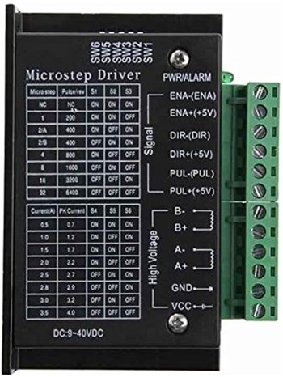- Driver de puissance pour moteurs pas à pas bipolaires (2 phases) avec une tension de fonctionnement de 9V à 42V et un courant jusqu'à 4.5A.
- Permet de faire du Microstepping. On peut faire avancer le moteur d'un pas, 1/2 pas, 1/4 pas, 1/8 pas, 1/16 pas ou 1/32 pas ce qui permet d'obtenir un mouvement plus fluide
- Compatible avec des signaux de contrôle 3.3V et 5V, ce qui le rend facile à interfacer avec des microcontrôleurs
Branchement :
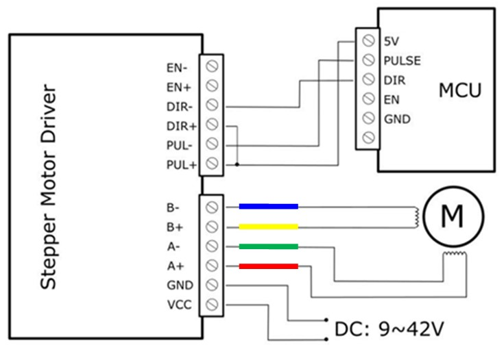Dans le schéma proposé :
- L'entrée de validation (EN) n'est pas branchée. Le module est validé par défaut
- Les entrées Pulse (PUL) et Direction (DIR) sont connectée en mode Anode commune : Les entré (+) sont reliée à 5V et la commande se fait par les entrée (-), (Commande par niveau bas)
- Pour le branchement du moteur, les couleurs proposées sont assez communes mais non standard. Verifier les phases de votre moteur
Fonctionnement :
- Positionner les switches S1, S2 et S3 pour choisir le microstep désiré. Augmenter le nombre de microsteps améliore la fluidité du mouvement mais diminue le couple 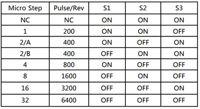 Le nombre de pulses par tour (Pulse/rev) proposé dans le tableau correspond à un moteur 200 pas
- La broche DIR permet de choisir la direction de rotation
- Chaque impulsion sur l'entrée PUL fait avancer le moteur d'un microstep 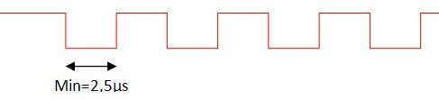 Pour augmenter la vitesse, on augmente la fréquence ce qui diminue la largeur de l'impulsion. La largeur min supportée par le module est 2.5µs ce qui donne une fréquence max: fmax = 1/(2×2.5µs)=200kHz
- Le tableau ci dessous donne la vitesse de rotation en tours/s d'un moteur 200 pas en fonction du rapport de Microstepping et de la fréquence des impulsions 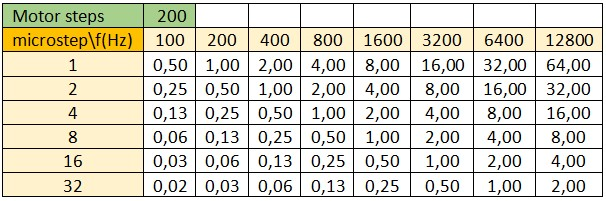
- On peut générer un signal carré sur les sorties pwm de l'Arduino à l'aide de l'instruction
analogWrite(127). Pour fixer la fréquence, il faut ajouter une des lignes
ci-dessous au début du programme
Fréquences PWM pour Arduino UNO
// For Arduino Uno, Nano, Micro Magician, Mini Driver, Lilly Pad and any other board using ATmega 8, 168 or 328 //-------------- fréquences PWM sur les broches D5 & D6 ------------------------------- TCCR0B = TCCR0B & B11111000 | B00000001; // f = 62500.00 Hz, T = 0.016ms TCCR0B = TCCR0B & B11111000 | B00000010; // f = 7812.50 Hz, T = 0.128ms TCCR0B = TCCR0B & B11111000 | B00000011; // f = 976.56 Hz, T = 1.024ms (The DEFAULT) TCCR0B = TCCR0B & B11111000 | B00000100; // f = 244.14 Hz, T = 4.096ms TCCR0B = TCCR0B & B11111000 | B00000101; // f = 61.04 Hz, T = 16.383ms //---------------------------------------------- Set PWM frequency for D9 & D10 ------------------------------ TCCR1B = TCCR1B & B11111000 | B00000001; // f = 31372.55 Hz, T = 0.032ms TCCR1B = TCCR1B & B11111000 | B00000010; // f = 3921.16 Hz, T = 0.255ms TCCR1B = TCCR1B & B11111000 | B00000011; // f = 490.20 Hz, T = 2.04ms (The DEFAULT) TCCR1B = TCCR1B & B11111000 | B00000100; // f = 122.55 Hz, T = 8.16ms TCCR1B = TCCR1B & B11111000 | B00000101; // f = 30.64 Hz, T = 32.637ms //---------------------------------------------- Set PWM frequency for D3 & D11 ------------------------------ TCCR2B = TCCR2B & B11111000 | B00000001; // f = 31372.55 Hz, T = 0.032ms TCCR2B = TCCR2B & B11111000 | B00000010; // f = 3921.16 Hz, T = 0.255ms TCCR2B = TCCR2B & B11111000 | B00000011; // f = 980.39 Hz, T = 1.020ms TCCR2B = TCCR2B & B11111000 | B00000100; // f = 490.20 Hz, T = 2.04ms (The DEFAULT) TCCR2B = TCCR2B & B11111000 | B00000101; // f = 245.10 Hz, T = 4.080ms TCCR2B = TCCR2B & B11111000 | B00000110; // f = 122.55 Hz, T = 8.16ms TCCR2B = TCCR2B & B11111000 | B00000111; // f = 30.64 Hz, T = 32.637ms
Le tableau ci dessous donne la vitesse de rotation en tours/s d'un moteur 200 pas en fonction du rapport de Microstepping et de la fréquence des impulsions que l'on peut générer sur les sorties PWM de l'Arduino UNO
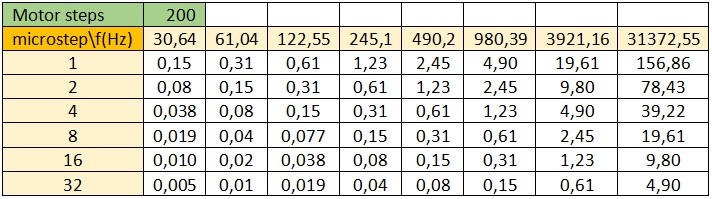
/*
* Test du module TB6600
* moteur 200 pas
* microstep = 1
*/
#define PUL 8
#define DIR 9
#define PULSE_ms 4 // 1 tour par 200 x 8ms = 1.6s
void setup() {
pinMode(PUL, OUTPUT);
pinMode(DIR, OUTPUT);
digitalWrite(PUL,HIGH);
digitalWrite(DIR,HIGH);
for(int i = 0 ; i < 200 ; i++){
digitalWrite(PUL,LOW);
delay(PULSE_ms);
digitalWrite(PUL,HIGH);
delay(PULSE_ms);
}
digitalWrite(DIR,LOW);
delay(1);
for(int i = 0 ; i < 200 ; i++){
digitalWrite(PUL,LOW);
delay(PULSE_ms);
digitalWrite(PUL,HIGH);
delay(PULSE_ms);
}
}
void loop() {
}